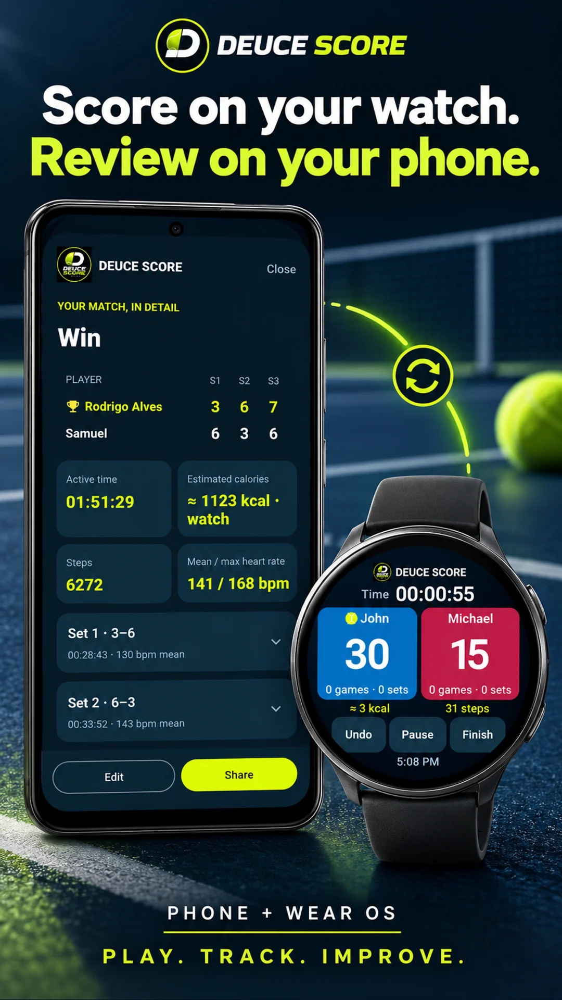
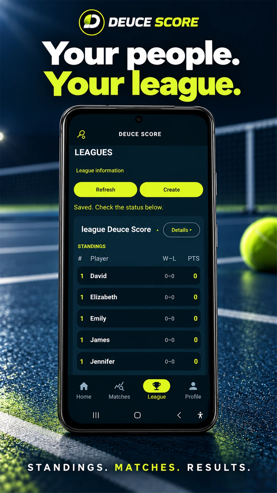
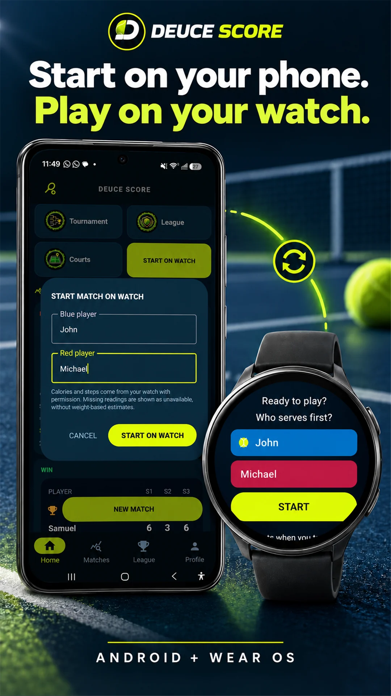
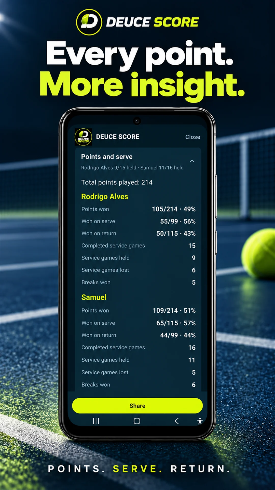

Android 8 ou superior · relógios com Wear OS compatível
DEUCE SCORE
Tempo ativo00:42:18
Ana404 games · 1 set
Sam303 games · 0 sets
≈ 240 kcal3.120 Passos
DesfazerPausarTerminar
01 / WEAR OSIlustração do app · dados de exemplo
PLAY.TRACK.IMPROVE.SEU TÊNIS, SEM COMPLICAÇÃO.
NOVO / SEU JOGO MERECE REPLAY
Jogue o ponto.
Guarde o melhor momento.
Grave a partida no celular, salve suas jogadas pelo relógio e transforme os melhores pontos em vídeos para rever e compartilhar.
01 / GRAVE. MARQUE. GUARDE.
A câmera no celular.
O controle no seu pulso.
Posicione o celular com uma boa visão da quadra e inicie a gravação antes de jogar. Depois de marcar um ponto, use “Salvar clipe” no relógio para guardar aquele momento.
O atalho para salvar o clipe fica disponível por 10 segundos após marcar o ponto.
Gravação em até 4K nos aparelhos compatíveis, com opções Full HD e HD.
Continue jogando sem precisar voltar ao celular para salvar cada destaque.
02 / SEUS MELHORES PONTOS, JUNTOS
Aquela jogada?
Está na sua galeria.
Encontre os clipes da partida, reveja os pontos e marque seus favoritos. Seus melhores momentos ficam organizados para assistir de novo ou compartilhar.
Veja o placar, o resultado do ponto e os detalhes de cada vídeo.
Marque favoritos e selecione vários clipes com um toque longo.
Abra um clipe para editar, salvar uma cópia na galeria do celular ou compartilhar.
03 / EDITE. ENQUADRE. COMPARTILHE.
Seu melhor momento.
Do seu jeito.
Use a linha do tempo com miniaturas para ajustar o início e o fim do vídeo. Escolha o formato original ou vertical 9:16 e prepare o trecho para compartilhar.
Corte o início e o fim para destacar a jogada.
Escolha o enquadramento original ou vertical 9:16.
Artes ilustrativas com telas em inglês. Recursos disponíveis na versão atual para Android e Wear OS compatível.
NA QUADRA / NO PULSO
O celular descansa. Seu jogo continua.
01
Prepare. Depois, Start.
Abra pelo celular ou direto no relógio. Confira os jogadores e comece quando estiver pronto.
02
Um toque. Um ponto.
Azul para um jogador, vermelho para o outro. Acompanhe 15, 30, 40, games e sets, com pausa e opção de desfazer.
03
Termine. Sincronize.
Confira o relatório no relógio e envie ao celular. No histórico, ajuste os nomes e mantenha os detalhes da partida.
DEPOIS DO MATCH POINT
Mais que um placar. A sua trajetória.
No celular, cada partida vira uma lembrança organizada — e uma nova forma de acompanhar a sua evolução.
Histórico local e backup na nuvem pela sua conta.
Estatísticas, aproveitamento e desempenho por superfície.
Ligas e torneios compartilhados com os participantes.
Busca de quadras, amigos e conquistas.
Relatórios para compartilhar por WhatsApp, SMS e outros apps.

Celular + relógio
Marque no pulso. Reveja a partida no celular.

Sua turma. Sua liga.
Reúna os participantes e acompanhe a classificação e os resultados.

Conectados para jogar
Prepare no celular, jogue com o relógio e sincronize o relatório.

Cada ponto conta
Entenda seu jogo com estatísticas de pontos, saque e devolução.
1 / 4 · Celular + relógio
Ilustrações com telas do app em inglês. Use as setas ou deslize para explorar.
CADA PONTO CONTA UMA HISTÓRIA
Além do placar.
Entenda sua evolução.
Explore o histórico dos últimos 30 ou 90 dias, do ano ou de todo o período. Acompanhe suas vitórias, derrotas, aproveitamento e sequências de vitórias.
Compare sets e games ganhos e perdidos ao longo do tempo.
Consulte pontos ganhos no saque e na devolução, games de saque confirmados e quebras.
Veja seu desempenho por superfície e contra os adversários mais frequentes.
Estatísticas dependem das partidas e dos pontos registrados. Tempo ativo, passos e calorias dependem das leituras disponíveis no relógio.
O JOGO TAMBÉM É COLETIVO
Sua turma. Sua competição.
Ligas
Classificação organizada, pontos e histórico de confrontos em formato de tênis. Convide os participantes usando seus e-mails.
Torneios
Chaves de 4, 8 ou 16 jogadores. Acompanhe os confrontos até a final, sem perder o caminho de cada resultado.
O criador registra diretamente. Placar enviado por um jogador só conta após a validação do adversário. Partidas avulsas não precisam de validação.
DISPONÍVEL NA GOOGLE PLAY
A próxima partida já pode ser diferente.
Baixe o Deuce Score pela Google Play e leve suas partidas para o celular.
No celular
Toque em “Baixar na Google Play” e siga as instruções da loja para instalar no celular.
No relógio
Na Google Play, consulte a disponibilidade para seu relógio Wear OS compatível e instale a versão do relógio para marcar os pontos no pulso.
Google PlayDisponível na Google Play
App StoreEm breve · versão iPhone planejada, sem data definida
A integração atual é Android + Wear OS. Não há suporte a Apple Watch nesta versão.